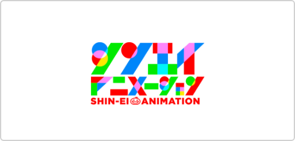
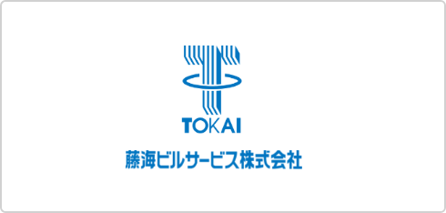
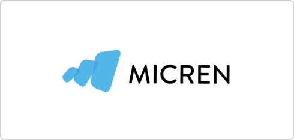

課題の本質を見る
目の前のITトラブルだけで判断せず、その背景と本業への影響を確かめます。

経営とITをつなぐ。
主役は、企業の事業と、そこで働く人たち。
経営が目指すことと現場の実態をつなぎ、ITを本業の成果につながる手段として生かします。


OUR PERSPECTIVE
経営の目的から、ITの使い方を考える。
会社が実現したいことを考えるとき、ITが先に来る必要はありません。大切なのは、事業をどう育て、誰にどんな価値を届けたいかです。
atLIBは、経営の思いと現場の事実を結び、ITに何を任せるべきかを一緒に考えます。新しい仕組みが必要ならつくり、今ある仕組みでできることは、その使い方を見直します。
ITを使うことではなく、ITを使って本業を前に進めること。
WHAT WE VALUE
目の前のITトラブルだけで判断せず、その背景と本業への影響を確かめます。
経営の意図を現場に、現場の事実を経営に届け、同じ目的に向かう判断を支えます。
導入ありきでは考えません。既存のITを使いこなし、必要な改善を積み重ねます。
経営の目的から考え、現場で実行し、日々の運用へつなぐ。
企業の成長や変化のさまざまな場面で、経営とITをつなぐ役割を担ってきました。
上場準備を進める中でIT部門の責任者が退職。専門人材が不足する中、ガバナンス整備と施策推進が求められていました。
必要な対策を短期・中長期で整理。経営層と各ベンダーの間に立ち、優先順位と進め方を支援しています。
意思決定の道筋を整え、ファイルサーバー移行や基幹システムのクラウド化を推進しています。
IT戦略・DXコンサルティング
長年IT部門を支えた担当者の定年を控える中、後任予定者が退職。運用を続けながら世代交代を進める必要がありました。
ヘルプデスク、入退社に伴うIT対応、各種施策の推進を通じて、日常運用と体制づくりを支援しました。
前任者は無事に定年を迎え、現在は新しいIT担当者とatLIBのチームが日々の運用を支えています。
情シスアウトソーシング
OUR CLIENTS
業種・企業規模を問わず、さまざまな企業のIT・情シスをご支援しています。



OUR SERVICES
経営と現場、それぞれの視点から企業の変化に向き合います。


企業が大切にしている事業と、その先にいるお客様のために、もっと時間と力を注げるように。
atLIBは、ITを手段として生かし、経営と現場の両方に向き合いながら、ともに歩みます。
2019年の創業から100年先を見据えた、私たちの目指す未来です。
FREE DIAGNOSIS
気になるテーマに合わせて、3つの無料診断からお選びいただけます。
「何から始めればいいか分からない」という段階でも構いません。
事業のこと、日々の運用のこと。気になるところから気軽にご相談ください。
※お問い合わせフォームは現在、送信機能を準備中です。